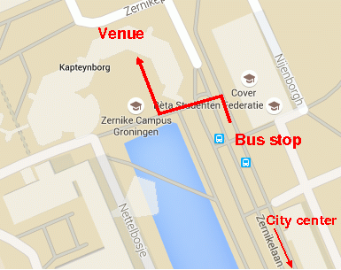

The meeting will be held on Thursday and Friday, July 2nd and 3rd at the Kapteyn Astronomical Institute in Groningen. The main meeting room is lecture room 0161 in the the Kapteynborg building on the Zernik Campus.
From Amsterdam international airport Schiphol Groningen is easily reached by
train. At 3 minutes past every hour there is a direct train, while at 33 minutes
past every hour the train with destination Leeuwarden can be used, with a
change-over to the train to Groningen in Zwolle. Total travel time is
2 hours 11 minutes, barring occasional delays.
Important: If you plan to make extensive use of public transport in the
Netherlands (e.g., train + bus), then it may be worth buying an
OV-chip card
at any train station. The card has an activation fee of 7.50 euros, but it
offers you a discount on bus tickets and the convenience of not having to
purchase paper tickets on busses and trains. You can charge the card by
checking in and out with your card on special card-reading machines located
on busses and in train stations.
The Zernike campus is located on the Northern outskirts of Groningen. From
the train station or the city center the campus can be reached by bus lines 11
and 15. The stop closest to the Kapteynborg is called "Nijenborg". Visit the
9292.nl website for information
on bus schedules. The regular ticket is 2 euros (one way), or slightly less if you
have purchased an
OV-chip card.
When exiting the bus at the "Nijenborg" bus stop the Kapteynborg is on the other
side of the street, see the map below.

There are quite a few hotels available in Groningen, mostly in the city center. Some hotels that are often used by conference participants and that we have good experiences with include: